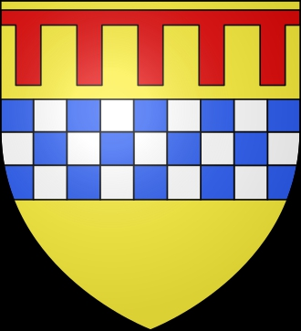

6008950 Earl Alexander (Stewart) of Menteith
Blev högst 65 år.

Född:
1240 Clydesdale, Crawford, Lanarkshire, Scotland.
Död:
före 1306 Menteith, Pearthshire, Scotland.
Barn:
Personhistoria
1240
Födelse 1240 Clydesdale, Crawford, Lanarkshire, Scotland
<1306
Död före 1306 Menteith, Pearthshire, Scotland